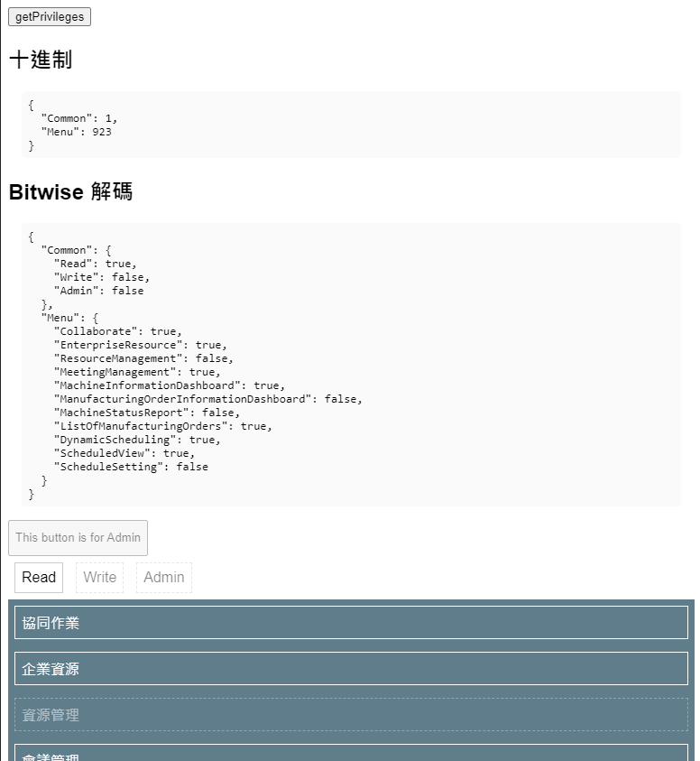
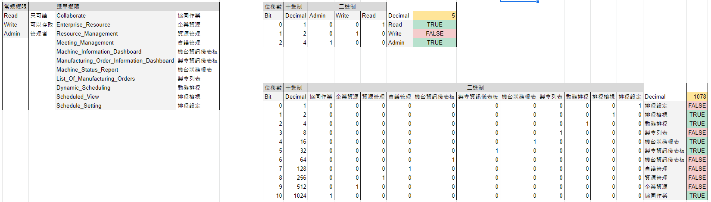

如何用 bitwise 來做到 True / False 這類的邏輯控制呢?
常見的設計模式
在設計各種控制項/權限等等, 有 True / False 這兩種狀態的時候, 直覺會設計成 key: True/False
也就是如下
1 | const response = { |
普遍是這樣設計, 其實也沒什麼太大的問題, 但是我們來看情況比較複雜的時候
當項目擴大到 26 個, 延續這種行為模式會讓 response 越來越肥, 但是也是僅此而已
1 | const response = { |
如果把這種設計模式改為 bitwise 模式, 會需要更多的定義以及運算
- Flag bit shift define
- Related bitwise calculate
- Complexity level up
1 | enum Flag { |
| Z | Y | X | … | … | A |
|---|---|---|---|---|---|
| 1 | 0 | 0 | … | … | 1 |
33554433 二進制如上, 代表著 A Z 是 True 的
雖然複雜度是直線往上, 但是整體看起來卻是比較輕鬆自在?
一個 10 進位數字就可以表示 n 種狀態!
- 不會一堆的 key: boolean 在整個專案出現
- 採用 enum 定義模式提高辨識度
- 使用操作性文字來取代 = true; = false; = true; = false; = true; = false;
程式碼: 點我
案例 1
如果在系統中權限劃分如下:
頁面權限
- Read: 只可讀
- Write: 可以存取
- Admin: 管理者
Menu 權限
- Collaborate: 協同作業
- Enterprise_Resource: 企業資源
- Resource_Management: 資源管理
- Meeting_Management: 會議管理
- Machine_Information_Dashboard: 機台資訊儀表板
- Manufacturing_Order_Information_Dashboard: 製令資訊儀表板
- Machine_Status_Report: 機台狀態報表
- List_Of_Manufacturing_Orders: 製令列表
- Dynamic_Scheduling: 動態排程
- Scheduled_View: 排程檢視
- Schedule_Setting: 排程設定
情境
有一個 RESTful 提供權限, 會回傳各項分類的的十進制資料

Demo: 點我
各權限細節

Excel: 點我
這個檔案其時就是個 bitwise 計算機, 輸入十進制即可顯示有哪些權限
權限定義
1 | enum CommonPriv { |
把相關全項常數化
定義各項權限的 bit 位移量
1 | // 位移數 |
RESTful
1 | // 亂數產生權限(用於測試) |
程式碼: 點我
案例 2
權限卡控
讀/寫/管理者; 各項選單權限;
在後端的 RESTful 對應到的 core function, 也是會需要卡權限
我們可以利用採用 decorate 的方式來對這些 function 做包裝
getSchedule 和 updateSchedule 分別對應 GET 和 PUT, 這兩個 function 如果都要卡使用權限的話, 大概的長相如下
- 有個 Service 來檢查目前這個 request 是否有權限來使用
- 有個 Decorate 來設定這些 function 需要哪那些權限
1 | class PrivilegeService { |
總結
二進制長度開到 40 (1111111111111111111111111111111111111111), 十進制會是 1099511627775, 算是很足夠使用了
因為是 1:1 對應, 所以每一項都有其邏輯判斷的作用, 當然也可以做複合判斷用
優點是後端只提供 decimal number, 在自家的前端或者 mobile APP 需要判斷權限, 或是第三方需要與自身系統對接都是用同一套 bitwise 去將之解構
整體複雜度直接提高不只一個檔次, 但是換來了以下幾個好處
定義宣告讓整體結構清晰好讀
擴充性因第 1 點而得到提升
減少大量的 json 內容
炫炮?
程式碼: 點我